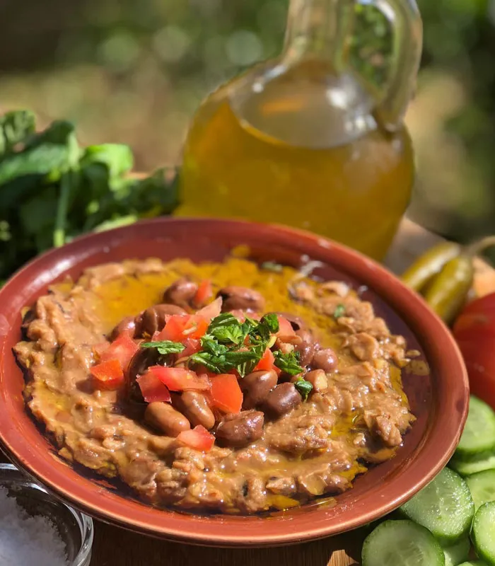
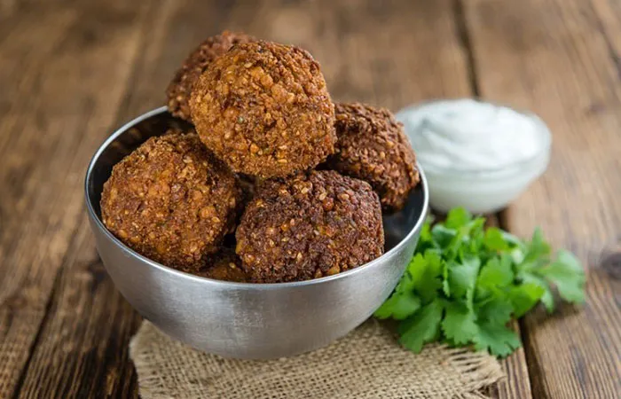
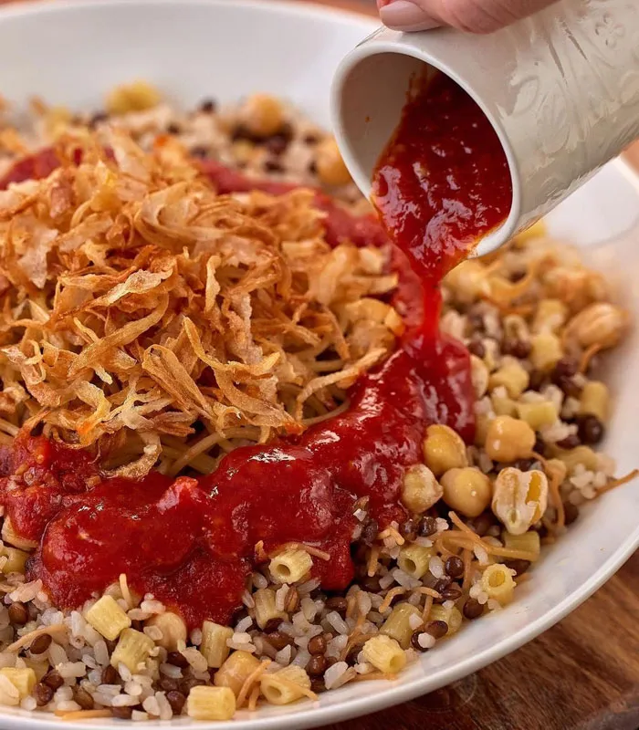
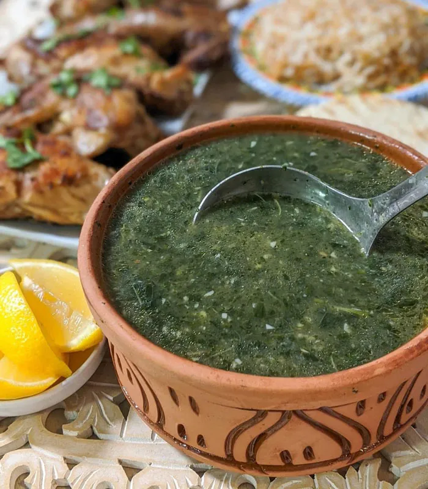
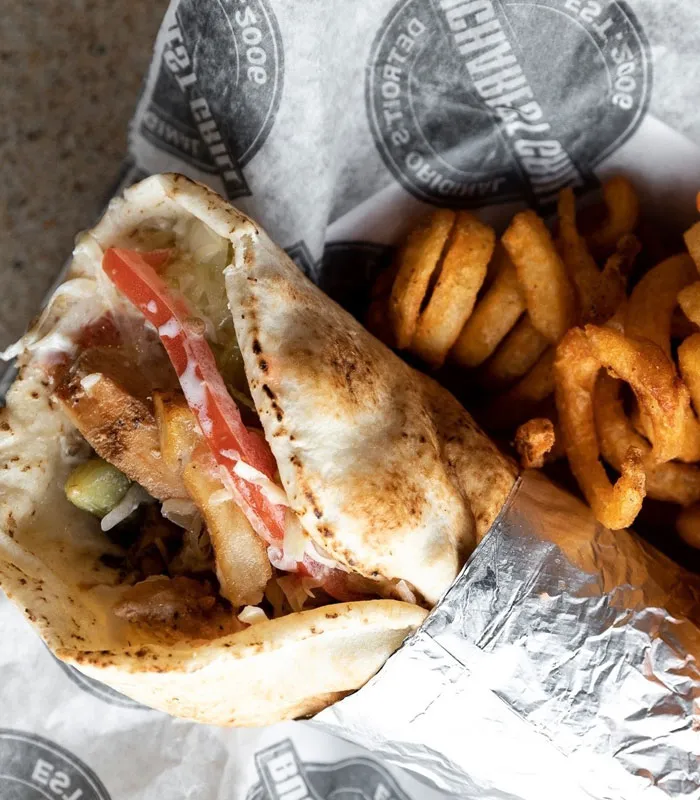

Culinária
A culinária árabe é famosa no mundo inteiro e com certeza há muitos pratos que você já conhece – e ama –, e as comidas típicas do Egito são uma bela forma de experimentar os sabores do mundo árabe com um toque bem característico do país.

Quando estiver viajando pela terra dos faraós, você será apresentado a muitos destes pratos e, mesmo que não prove todos, eu tenho certeza de que você vai gostar das texturas, dos aromas e dos temperos.
Além disso, tem o conforto que eles nos proporcionam só por saber que estamos experimentando pratos com uma longa história – alguns deles aprovados até por faraós e outros que viraram polêmica.
Comidas Típicas do Egito
Nesta lista, você vai conhecer um pouco das comidas típicas do Egito e algumas histórias que deixarão sua mesa muito mais rica.1. Ful Medames
A comida de rua mais popular no Egito é o ful medames, uma pasta de favas – um tipo de feijão – temperada com alho e azeite que é encontrada em, praticamente, todas as esquinas das principais cidades.
Nos restaurantes o prato complementa o cardápio, mas também é muito usado como recheio de sanduíches que a gente pode comprar em um saquinho para levar nos passeios pagando um preço super camarada.2. Tamiya
Outra comida de rua egípcia básica é o tamiya, um bolinho feito com purê de feijão – em vez de grão de bico, que é usado em outras partes do Mediterrâneo – e salsinha.
Ele pode ser confundido com o tradicional faláfel, mas além de ser feito com favas, o bolinho é modelado em forma de discos redondos e achatados.3. Koshari
Um dos mais famosos pratos egípcios o koshari é uma mistura de arroz, lentilhas e macarrão coberto com cebola frita e um molho de tomate picante. Ele costumava ser vendido apenas em carrinhos nas ruas e muito popular por ser uma refeição rápida, barata e fácil de encontrar.
Com o tempo, foi introduzido no cardápio dos restaurantes e agora é normalmente consumido em restaurantes especializados, que servem apenas este prato – é uma uma das comidas típicas do Egito que eu mais gosto.4. Molokhia
O molokhia – também conhecido como mulukhiyah – é considerado por muitos o prato nacional do Egito, consumido na maioria das casas e muito usado para introduzir os vegetais na dieta das crianças durante seus primeiros anos. Ele é uma sopa feita de corchorus, uma planta conhecida como juta, que também é muito presente na culinária de países como Tunísia, Quênia, Haiti e Filipinas.
A versão egípcia é feita com as folhas da planta picadas finamente cozidas em caldo de galinha com alho refogado, coentro e temperos. Como o ful medames e koshari, é uma comida típica do Egito que está presente nas casas e nos restaurantes. Apesar de ser um dos pratos preferidos dos egípcios, é difícil gostar dele de primeira.Este prato tem uma história muito curiosa: o imperador Al-Hakim proibiu seus súditos de comerem o molokhia porque acreditava que ele era afrodisíaco, mas seu sucessor, o califa al-Zahir permitiu o consumo do prato novamente. Apesar disso, os drusos, que ainda têm Al-Hakim com figura importante e quase divina, continuam a respeitar a proibição e não comem molokhia até hoje.
5. Shawarma
O shawarma é um sanduíche de pão árabe com recheio de cordeiro ou frango assado em grelha giratória na horizontal – você já deve ter visto essas assadeiras.
À medida em que a carne é assada, ela é cortada e misturada em uma frigideira com tomate picado, cebola e salsinhaa antes de ser enrolada no pão e embrulhada em papel para levar.